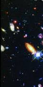

12. Քվազարներ։ Մետագալակտիկա
Մետագալակտիկա
Մետագալակտիկա (մետա․.. և Գալակտիկա), գալակտիկաների և նրանց խմբերի հսկայական համակարգ, որի մասն են կազմում ժամանակակից խոշորագույն աստղադիտակների համար մատչելի բոլոր գալակտիկաները։ Մետագալակտիկայի ներկայումս դիտվող մասում գալակտիկաների թիվն անցնում է մեկ միլիարդից։ Մեր Գալակտիկայի կամ Ծիր կաթինի համակարգի ամենամոտ հարևաններն են Մագելանի մեծ և փոքր ամպեր կոչվող գալակտիկաները, որոնց հեռավորությունը շուրջ 160․000 լս.-տ. է, իսկ հայտնիներից ամենահեռավորներինը՝ ավելի քան 10 միլիարդ լս․-տ․ (հեռավորությունները որոշվում են գալակտիկաների սպեկտրներում գծերի կարմիր շեղման միջոցով)։ Մետագալակտիկայում նյութը բաշխված է խիստ անհավասարաչափ, հիմնականում կենտրոնացած է գալակտիկաներում, որոնք կազմում են տարբեր չափերի ու բարդության համակարգեր՝ սկսած կրկնակի, եռակի և բազմակի գալակտիկաներից մինչև գալակտիկաների կույտերը (պարունակում են մինչև մի քանի հազար բաղադրիչներ)։ Օրինակ, մեր Գալակտիկան, Անդրոմեդայի համաստեղության մեջ դիտվող հսկա գալակտիկան՝ իր արբանյակ-գալակտիկաներով, ինչպես նաև մի քանի մոտակա այլ գալակտիկաներ կազմում են գալակտիկաների տեղական համակարգը։ Որոշ աստղագետներ կարծում են, որ մետագալակտիկայում կան գալակտիկաների ավելի մեծ համակարգեր՝ գերկույտեր։ Ենթադրվում է, որ գալակտիկաների այդպիսի գերկույտ, կազմված տասնյակ հազարավոր գալակտիկաներից, շուրջ 60—100 միլիոն լս.-տ․ տրամագծով գտնվում է հյուսիսային գալակտիկական կիսագնդում (կենտրոնը՝ Կույսի համաստեղությունում)։ Գալակտիկաների այդ տեղական գերկույտի մեջ է մտնում, մասնավորապես, գալակտիկաների տեղական համակարգը։ Աստղադիտակների հզորության մեծացման, լուսաընդունիչների զգայնության աճի, ինչպես նաև դիտումների ալիքային տիրույթի ընդլայնման շնորհիվ հայտնագործվել են շատ մեծ լուսատվությամբ գալակտիկաների նոր տեսակներ՝ ոադիոգալակտիկաներ, քվազարներ և այլն, որի հետևանքով զգալիորեն աճել է մետագալակտիկայի դիտվող մասի շառավիղը։ Մետագալակտիկայում նյութի միջին խտությունը շատ փոքր է՝ 10−31-10−30 գ/սմ3, իսկ միջգալակտիկական տարածությունում այն չնչին է․ այդտեղ գտնվում են առանձին աստղեր, գազ և փոշի, կան նաև էլեկտրամագնիսական ալիքներ, տիեզերական ճառագայթներ, ձգողական, մագնիսական և այլ դաշտեր։ Մետագալակտիկայի ամենակարևոր յուրահատկություններից է դրա դիտվող մասում գալակտիկաների փոխադարձ հեռացումը, այլ կերպ ասած, մետագալակտիկայի ընդարձակումը։ Ընդհանրապես մետագալակտիկայի չափերի, ձևի և կառուցվածքի մասին շատ քիչ բան է հայտնի։ ժամանակակից դիտումները ցույց չեն տալիս մետագալակտիկայի միջին խտության որևէ նվազում՝ մեծ հեռավորությունների վրա, որը կվկայեր մետագալակտիկայի սահմաններին մոտենալու մասին։ Պետք է ենթադրել, որ մենք դիտում ենք հսկայական չափերի, բայց և վերջավոր ու սահմանափակ մետագալակտիկայի մի մասը միայն։ Բացառված չէ, որ Տիեզերքում կան նաև այլ մետագալակտիկաներ և այլն։ Ուստի, ճիշտ չէ նույնացնել մետագալակտիկան ամբողջ Տիեզերքի հետ, ինչպես հաճախ այդ արվում է կոսմոլոգիայում։
